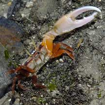
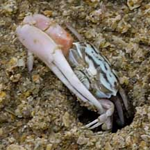
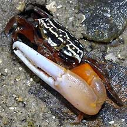
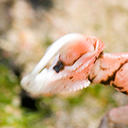

|
|
| crabs text index | photo index |
| Phylum Arthropoda > Subphylum Crustacea > Class Malacostraca > Order Decapoda > Brachyurans > Superfamily Ocypodoidea > Genus Uca |
| Porcelain
fiddler crab Austruca annulipes Family Ocypodidae updated Dec 2019 Where seen? This small crab with an enlarged pincer that is smooth is sometimes seen on some of our shores. Sandy, silty shores near the low water mark, often near mangroves. It was previously known as Uca annulipes. Features: Body width 1.5-2cm. Body squarish. The male fiddler crab's enlarged pincer almost twice as long as the body width. The enlarged pincer's outer palm is smooth and does not have a triangular depression. The movable upper finger extends past the immobile lower finger. There is a wide gape between the upper and lower finger. The enlarged pincer's inner palm has a diagonal ridge of bumps. The enlarged pincer is usually pink, sometimes nearly white. Body varies from black to pale, with dark or blue or white stripes. Eyes dark on long stalks yellow, walking legs short various colours from dark to light, orange, brown or reddish. Sometimes mistaken for the Orange fiddler crab (Uca vocans). More on how to tell apart the fiddler crabs commonly seen on our shores. |
 Male displaying, waving his legs and enlarged pincer. St John's Island, Oct 04 |
 Smooth on the outer side of the pincer. St John's Island, Oct 04 |
 Bumpy ridge on the inside 'palm' of the pincer |
|
 Chek Jawa, Jan 04 |
 Pulau Hantu, Apr 04 |
 Chek Jawa, Jan 04 |
| Porcelain fiddler crabs on Singapore shores |
On wildsingapore
flickr
|
| Other sightings on Singapore shores |
 |
|
|
Links
References
|